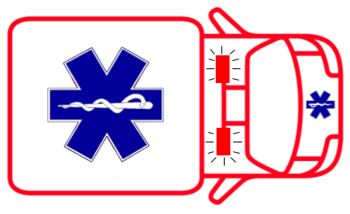

Curbside Commercial Loading Zone
Providing a curbside commercial loading zone is a great way to
leave the center lane for emergency vehicles. It is also
safer and avoids violating the California vehicle code prohibiting
stopping in the center turn lane.
